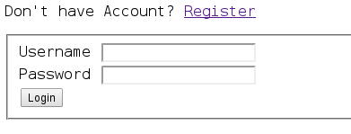
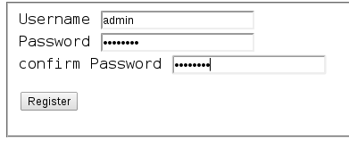
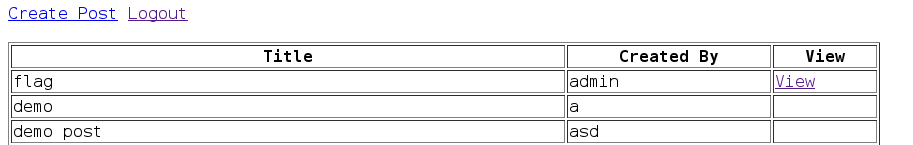

HackIM 2013 - Web 400 WriteUp Posted: 2013-03-02 18:59
Web 4 - 400 points
Again, like Web 2 - 200 points and Web 3 - 300 points we were given a link to the challenge. And this is what it displays:
So, we applied the same technique as Web 2 - 200 points, registered as admin with our own unique passphrase, and log in. After we login, we were given a mail sending feature:
Here, if you didn't login as admin, you would not be able to use the Become Admin and Get Flag functions. So, we went right ahead and clicked the Get Flag function and this spits out for us:
AWESOMENESS! :)
HackIM 2013 - Web 300 WriteUp Posted: 2013-03-02 18:28
Web 3 - 300 points
Again, like Web 2 - 200 points we were given a link to the challenge. And this is what it displays:

From the page, it seems we are in trouble. But of course, have no fear! We checked the hints and it was given that the hint to this problem was to enumerate....now..that's interesting. :)
So, now, we Google! By googling enumerate computer we get (quote from Wikipedia):
A Network enumerator or network scanner is a computer program used to retrieve user names, and info on groups, shares and services of networked computers.
Now, that gave us the idea of finding the much needed piece of the puzzle using specific filtering of Google searches directed to ctf.nullcon.net :)
site:ctf.nullcon.net inurl:login
The returned search results pointed us to an interesting phps file. A phps file is a source of the php file. So, from there, we changed the file login.php to login.phps, and we got this:

By looking at the php source file, we know that the login checks whether there is a variable called Login is set in the POST request. And since the login page wasn't checking whether the credentials were correct or not, we used curl to solve the challenge as follows:
curl --cookie "Login=1" http://ctf.nullcon.net/challenges/web/web4/onepage.php
And the returned response was as follows:
<html> <head> </head> <body> <h1>The flag is JagguisaNAUGHTYbunder</h1> </body> </html>
command line tools FTW! :)
HackIM 2013 - Web 200 WriteUp Posted: 2013-03-02 18:10
Web 2 - 200 points
We were given a url to the challenge and this is what it displays:
It's quite clear that you either need to know the credentials or to register. So, we chose the register route. We first tried logging with our own crafted credentials. But we were unable to view the flag that way. Thus, chose to register as admin afterwards. Of course, we chose a password that is unique for us. ;)
And well surprise...it was accepted!! AWESOME!

After we login we can see that the post named flag now has an option for us to view the post!
So, we clicked on the view link and out comes the javascript alert function that gave us the flag.
The flag is: ChutkiisVERYcute
HackIM 2013 - Programming 400 WriteUp Posted: 2013-03-02 05:08
Programming 4 - 400 points
Description: interpret and give answer. start reading from left if digit then add the digit. if x then remove it and go back 2 places if y then remove and go front 2 places
example : 12y34x56 answer is 14
how : 1 + 2 + 5 + 6 = 14
12y34x5612345678910xy0981235432x4765893x219532y875439664y3x 2345688x754312x2456x7876554x43y324x6778y7643223457789494x98696763y15348798y765341y1878979
public class FunkyText {
/** * @param args the command line arguments */
public static void main(String[] args) {
// TODO code application logic here
String num="12y34x5612345678910xy0981235432x4765893x219532y875439664y3x2345688x754312x2456x7876554x43y324x6778y7643223457789494x98696763y15348798y765341y1878979";
int total=0;
int num_length=num.length();
for(int index=0;index<num_length;index++)
{
System.out.println("index:"+index);
switch(num.charAt(index))
{
case 'x':
{
num=num.substring(0, index)+num.substring(index+1,num.length());
num_length=num.length();
index=index-2;
break;
}
case 'y':
{
num=num.substring(0, index)+num.substring(index+1,num.length());
num_length=num.length();
index=index+2;
break;
}
default:
{
total=total+(Integer.parseInt(num.substring(index, index+1)));
}
}
System.out.println("The string:"+num);
System.out.println("Total:"+total);
}
}
By using the example of : 12y34x56 answer is 14 how : 1 + 2 + 5 + 6 = 14. We are able to observe and create a logic by manipulating the character position of the statement itself such in this way that I have decided to use the String data type to manipulate the logic to produce the FLAG.
Character position/number: 0 1 2 3 4 5 6 7 Character: 1 2 y 3 4 x 5 6
Based on figure above, when the switch-case encounters a non-x or y character the program will execute the default statement of
"total=total+(Integer.parseInt(num.substring(index, index+1)));"
where by converting the character within the string at the character position into an integer data type and add the following digit into the total variable. Meanwhile, if the switch-case either meets an x character the following statement occurs:
num=num.substring(0, index)+num.substring(index+1,num.length()); num_length=num.length(); index=index-2;
Translation, the program will create a new string that will override the previous string with the deletion of the "x" character at that particular character position and at the same time moves back 2 spaces in the character position index. Same situation occurs in "y" except the character position is moved 2 spaces front. Thus once the program has reached the end, the FLAG sum is printed.
The flag is: 557
HackIM 2013 - Programming 300 WriteUp Posted: 2013-03-02 05:00
Programming 3 - 300 points
Description: So our folks wanted to work on binomial series but they understood incorrectly so they made a series of this type. if series is for 10 numbers
10/1 + 9/2 + 8/3 ..... 1/10 = 22.218 round to 2 decimal place = 22.21
now they did calculated this series for 31337 numbers can you help these guys in finding the number again.
public class Binomial {
static final int number=31337; // The binominal value that we are searching for based on the requirements.
/** * @param args the command line arguments */
public static void main(String[] args) {
// TODO code application logic here
double sum=0; // sum is declared and initialised with the value of zero.
for(int ctr=1;ctr<=number;ctr++)
{
sum=sum+(((number+1)-ctr)/ctr); // The method of calculation used.
// e.g. Term 1: sum=0+(((31337+1)-1)/1),
// Term 2: sum=31337+(((31337+1)-2)/2), ...,
//Term 31337: sum=311180.64640351594+(((31337+1)-31337)/31337)
}
System.out.printf("%.2f\n",sum); // Round off to two decimal places.
}
}
The flag is: 311180.65
HackIM 2013 - Programming 100 WriteUp Posted: 2013-03-02 04:36
Programming 1 - 100 points
Description: Calculate 150000th Fibonacci series, and flag is sum of the alternate numbers from answers.
We interpreted the question as: Calculate 150000th Fibonacci series, rather than the original. ;)
package fibonacchi;
import java.io.File;
import java.io.PrintWriter;
import java.math.BigInteger;
final static int Fibonacchi_term=150000; // The Term that we are looking for.
public class Fibonacchi {
/** * @param args the command line arguments */
public static void main(String[] args) throws Exception {
// TODO code application logic here
BigInteger obj1 = new BigInteger("0"); // Fibonachi's First Term
BigInteger obj2 = new BigInteger("1"); // Fibonachi's Second Term
BigInteger obj3; // Fibonachi's Third term and so on until 150,000's Term
obj3=obj2.add(obj1);
for(int n=1;n<=(Fibonacchi_term-2);n++) // 150,000 Term - 2 which is stated from obj1 and obj2 from the beginning which is 0 and 1.
{
obj1=obj2;
obj2=obj3;
obj3=obj2.add(obj1);
}
File fileobj = new File("output.txt"); // Exporting the result to an external file named output.txt, reason being the number is huge.
PrintWriter output=new PrintWriter(fileobj);
output.println(obj3); // Print the result of the term into the file.
output.close();
}
}
The reason being that BigInteger was implemented in this code instead of using either int, double or long is because is to prevent an overflow due to the huge number that it is produced at the end of the term's calculation (The maximum value of the data type of long is 9223372036854775807, hence anything higher causes an overflow which in result producing inaccurate answer/FLAG). Therefore, BigInteger is used due to the fact it is able to adjust its size to accommodate the value of the calculation and produce the final answer/FLAG without facing any overflow.
HackIM 2013 - RE 100 WriteUp Posted: 2013-02-06 00:48
RE 1 Description: - challenge-1 - challenge.do
So, after downloading challenge.do and opening it up, we were presented with this:
''=~('('.'?'.'{'.('`'|'%').('['^'-').('`'|'!').('`'|',').'"'.('['^'.').('['^'(').('`'|'%').('{'^'[')
.('['^'(').('['^'/').('['^')').('`'|')').('`'|'#').('['^'/').';'.('['^'.').('['^'(').('`'|'%').('{'^
'[').('['^',').('`'|'!').('['^')').('`'|'.').('`'|')').('`'|'.').('`'|"'").('['^'(').';'.('`'|')').(
'`'|'&').'('.'\\'.'$'.'#'.('`'^'!').('{'^')').('`'^"'").('{'^'-').'='.'='.('^'^('`'|','))."\)".'\\'.
'{'.('`'|')').('`'|'&').'('.'\\'.'$'.('`'^'!').('{'^')').('`'^"'").('{'^'-').'['.('^'^('`'|'.')).']'
.'.'.'\\'.'$'.('`'^'!').('{'^')').('`'^"'").('{'^'-').'['.('^'^('`'|'/')).']'.('`'|'%').('['^('*')).
'\\'.'$'.('`'^'%').('`'^'.').('{'^'-').'\\'.'{'."'".('{'^'.').('{'^'(').('`'^'%').('{'^')')."'".'\\'
.'}'.')'.'\\'.'{'.('['^'+').('['^')').('`'|')').('`'|'.').('['^'/').'\\'.'"'.('`'^'&').('`'|(',')).(
'`'|'!').('`'|"'").'='."'".('`'^"'").('`'|'/').('`'|',').('`'|'$').('`'|'%').('`'|'.').('`'^('$')).(
'`'|'!').('['^'"').('['^'(').('`'^'!').('['^')').('`'|'%').('`'^'"').('`'|'!').('`'|'#').('`'|"\+").
"'".'\\'.'"'.'\\'.'}'.'\\'.'}'.'"'.'}'.')');$:='.'^'~';$~='@'|'(';$^=')'^'[';$/='`'|'.';$,='('^"\}";
Upon inspection, MavJS pointed out that it was Perl code. Further hints shed light that it was obfuscated Perl code that we were looking at. So, a little bit of Google searching and I stumbled upon this site. Following the instructions on the site, I fired up the Terminal and ran the script and deobfuscated Perl code appeared:
naavinm@naavinm:~/Desktop$ perl -MO=Deparse script.pl | perltidy > newscript.pl
script.pl syntax OK
naavinm@naavinm:~/Desktop$ cat newscript.pl
'' =~
/(?{eval"use strict;use warnings;if(\$#ARGV==2)\{if(\$ARGV[0].\$ARGV[1]eq\$ENV\{'USER'\})\{print\"Flag='GoldenDaysAreBack'\"\}\}"})/;
$: = 'P';
$~ = 'h';
$^ = 'r';
$/ = 'n';
$, = 'U';
And the flag is: GoldenDaysAreBack.
HackIM 2013 - Web 100 WriteUp Posted: 2013-02-05 23:22
Web Security questions, ranging from 1 to 5 are the first category in HackIM. But it isn't neccessary to solve them first before others. So the challenge is presented as:

It's clear that the Admin Console was meant for us. So we clicked on it! But BAM! This showed up,

That's bad isn't? Well, do some googling, as usual about stackoverflow hacking cases, and you'd have come across this; Anatomy of an Attack: How I Hacked StackOverflow. From the blog post, you'd see that the author mentions not to rely upon X-Forwarded-For for anything. Well, there's a hint isn't it. ;)
So, how do we go about hacking that challenge then? It's pretty simple, and most Linux distros already have it by default....
...drum roll please...
Mr. curl :D
So here is what we did you exploit it:
~$ curl --header "X-Forwarded-For: 127.0.0.1" http://ctf.nullcon.net/challenges/web/web1/getflag.php
After that it will print out:
~$ The Flag is DholuBholuareTWINS
Sweet!? :D
Another year, another start: Glider Swirley and APU CSFC Posted: 2013-02-05 22:56
So, who/what is APU CSFC?
APU CSFC - Asia Pacific University of Technology & Innovation's Cyber Security & Forensics Club.
How is GliderSwirley associated/affiliated with APU CSFC?
GliderSwirley was formed out of that same university and the same core members who run APU CSFC as well. We were unsatisfied with how there was a lack of Information Security and Forensics awareness, so we thought, the first step towards learning about InfoSec is to participate in CTFs and do InfoSec stuff.
Thus, GliderSwirley has been participating in CTFs with only 3-4 persons for a little over 3 months and a few months before APU CSFC was officialised/founded in APU. We do welcome other rookie players to collaborate with us as well. :)
The start of this year for GliderSwirley was pretty much awesome, to be honest, managed to grow to a 6 person team and participated in nullcon HackIM CTF, scored 5200 points and placed 23rd overall. Not bad for the 0xn00bs, eh? :P
[Note] There will be a series of writeups for the challenges we've managed to solve at HackIM CTF following this post.